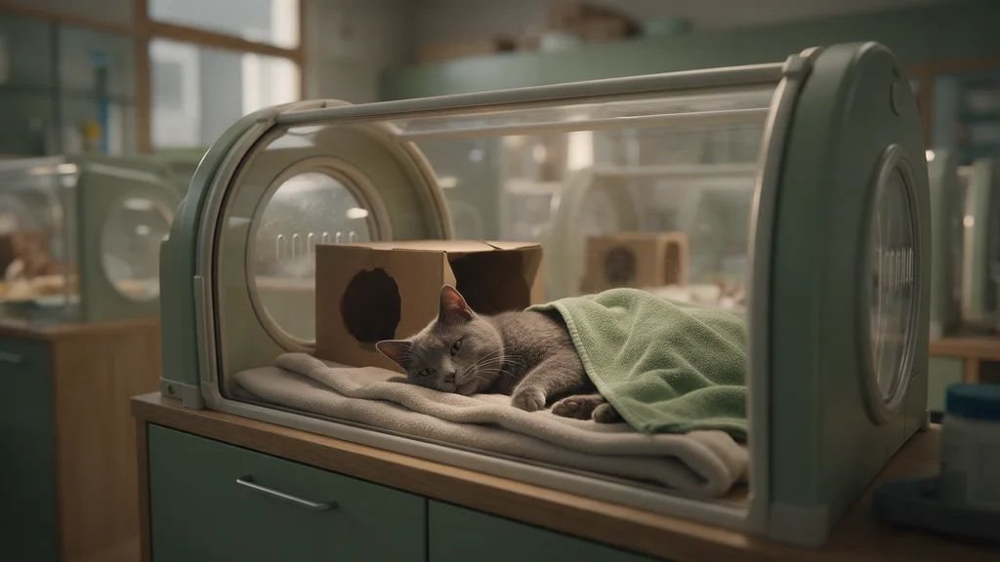

Practical advice from our vets
Clear, trustworthy guides for the questions we hear every day. Written by our team, reviewed by our vets.
Paralysis ticks: what every east-coast pet owner should know
How to search your pet daily, the early signs to watch for, and why prevention matters from spring.
Read articleDogsHow to tell if your dog is in pain
Dogs hide pain well. These quiet changes in posture, appetite and behaviour are worth a call.
Read article
Making vet visits easier for anxious cats
Carrier training, calming sprays and why we have a separate cat waiting room.
Read article
Keeping pets safe in an Australian summer
Heatstroke, hot pavements and snake season. A simple checklist for the warmer months.
Read article
Why bad breath is a health problem, not a quirk
Dental disease affects most pets over three. Here is what it means and what we can do.
Read articlePuppies and kittensYour new puppy's first 12 weeks
Vaccinations, socialisation windows, toilet training and when to start preschool.
Read article
Arthritis in older pets: small changes that help
Ramps, rugs, weight control and modern pain relief that keeps them moving.
Read articleRabbitsRabbit care basics most owners miss
Hay first, dental checks and the two vaccinations rabbits in Australia need.
Read article
Indoor cats: keeping them happy and healthy
Enrichment ideas, litter tray rules and how to spot early kidney problems.
Read articleSeasonal checklist for Australian pets
Each season brings its own risks. Keep this handy and you will be a step ahead.
Spring
Tick season begins. Start prevention, check coats daily, and watch for grass seeds and snake activity.
Summer
Walk early or late, test pavements with your hand, provide shade and water, and never leave pets in cars.
Autumn
Book senior checks before winter, keep up worming, and plan ahead for fireworks events.
Winter
Arthritis flares in the cold. Warm beds, gentle exercise and a pain review can make a big difference.
When to call us straight away
Some symptoms can't wait for a routine appointment. Call (02) 5550 4199 if you notice:
- Breathing difficultyLaboured, noisy or open-mouth breathing, especially in cats.
- Wobbly back legs or a changed voicePossible tick paralysis. Search for a tick and come in.
- Swollen tummy with retchingParticularly in large, deep-chested dogs.
- Straining to urinateA blocked bladder in male cats is a life-threatening emergency.
- Suspected poisoning or snake biteBring any packaging, and keep your pet calm and still.

Get our monthly pet care notes
Seasonal reminders, new articles and clinic news. One email a month, no spam.